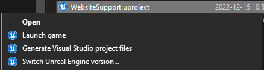

A Quick Dive in Unreal Windows Contextual Commands
Introduction
I was trying to resolve some project solution generation issues a few weeks ago and it led me to wonder: What are those ?

What exactly happens when we click those commands ? Well I searched a bit and thought I'd write down my findings here 😄. Let's have fun.
UnrealVersionSelector
Lucky for us, the UnrealVersionSelector tool source code is available on the official Unreal github ! We can go take a look at exactly what those command arguments do, as a quick list the registered commands looks like this:
- switchversion: /switchversion
- rungenproj: /projectfiles
- run: /game
- open: /editor
A quick search gives us all of the commands, and even new ones >:)
1 2 3 4 5 6 7 8 9 10 11 12 13 14 15 16 17 18 19 20 21 22 23 24 | |
If we dive a bit into the code we can find a lot of details about how unreal finds installations and how it registers stuff, notably I was wondering what the GUID found under EngineAssociation corresponds to in the .uproject file.
Well you can register custom installations of the engine by navigating to your unreal source folder and running UnrealVersionSelector.exe -register.
This adds a key to the registry under the path HKEY_CURRENT_USER\SOFTWARE\Epic Games\Unreal Engine\Builds which matches that GUID to your install folder ! I think that was pretty interesting, if you're curious to learn more it's all happening in those files (on windows) :
Source\Developer\DesktopPlatform\Private\DesktopPlatformBase.cppSource\Developer\DesktopPlatform\Private\DesktopPlatformWindows.cpp
An other interesting function to look at is EnumerateLauncherEngineInstallations, we can see here that everything that the Epic Launcher installs is actually saved in a .dat file in ProgramData C:\ProgramData\Epic\UnrealEngineLauncher\LauncherInstalled.dat. I won't spoil the content but you can parse the file yourself 😏
Conclusion
I hope you liked this little dive in windows belly ! And some of those keys about the unreal version selector. I think it's good knowledge to have when we're trying to debug project setup issues 😁
If you make new tools now you should be able to plug them in the contextual menu fairly easily for your clients ! And if you ever wonder what a tool does when you click its contextual menu button you should be able to find out what 😄